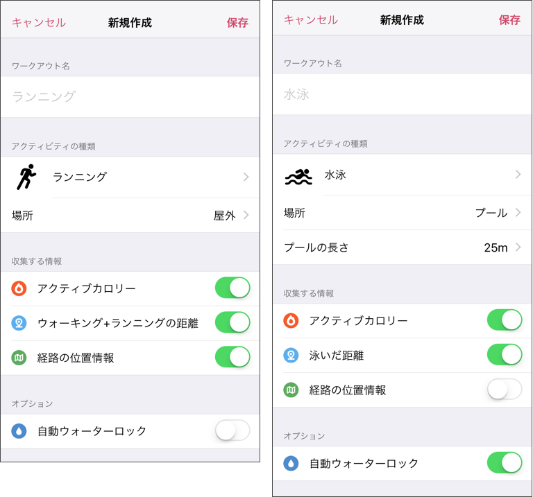
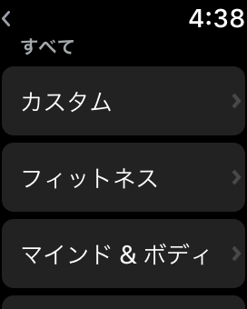
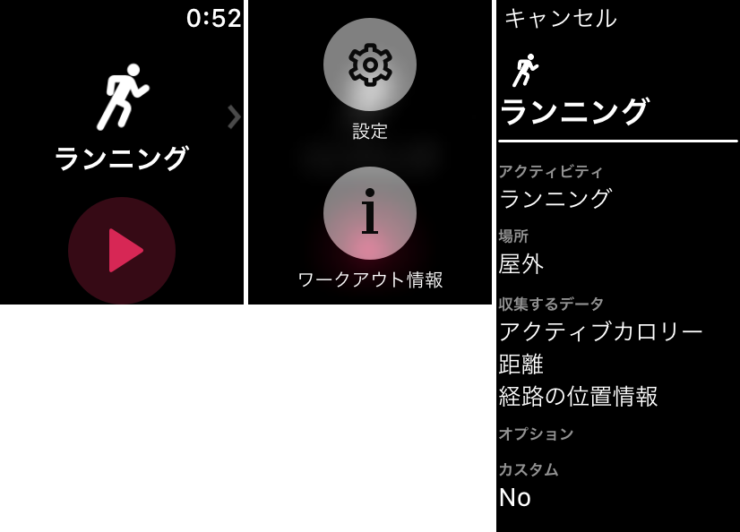
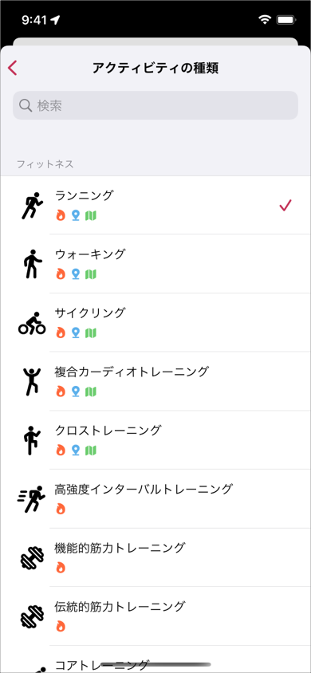

ヘルプ
ワークアウトの構成とカスタマイズ
Zonesアプリでワークアウトを測定する時、アクティビィティの種類により自動的にワークアウトの構成を決定します。
これらは「カスタムワークアウト」で任意に変更することができます。(PROのみ)
無料版をお使いの場合は、デフォルト構成の確認方法をごらんください。
目的のアクティビティの種類が無い場合、カスタムワークアウトで自由に名前をつけて作成することができます。
1. ワークアウトの構成

- ワークアウト名
-
ここに登録された名前が、記録結果のワークアウト名として表示されます。
この名前は、他アプリでも表示される場合があります。（Appleのアクティビティ アプリなど） -
デフォルトでは、アクティビティの種類の名前になります。
カスタムワークアウトの場合、わかりやすい名前を自由につけてください。 - アクティビティの種類
-
目的のアクティビティが見つからない場合は、なるべく近いものを選択してください。
アクティビティの追加はできません。 -
この種類は、Apple ヘルスケア(HealthKit)のアクティビティと連動しています。
OSのバージョンに依存するため、 iOSとwatchOSにバージョンのズレがあると測定できない場合があります。
watchOSのバージョンアップも忘れず行ってください。 - 場所
- 運動を行った場所を設定します。
- プールの長さ
-
プール水泳以外では表示されません。
この設定をもとに、ラップが自動的に記録されるようになります。  アクティブカロリー
アクティブカロリー- アクティブカロリーの合計をワークアウトに登録します。
 距離
距離-
ワークアウトに距離の合計の登録と、距離データを紐付けします。
距離の測定に対応していないアクティビティの種類の場合は、この項目は表示されません。 -
距離のデータソースは、アクティビティの種類により変わります。
ラベルには、対応する距離のデータソース名が表示されます。  経路の位置情報
経路の位置情報-
GPSの位置情報を収集して、ルートマップの登録します。
距離の測定に対応していないアクティビティの種類の場合は、この項目は表示されません。 -
OFFにすることにより、Apple Watchの電力消費を抑えることができます。
ルートマップが必要ない場合には、OFFにしてください。  自動ウォーターロック
自動ウォーターロック- ワークアウト開始時に、自動的にウォーターロックを行います。
2. カスタムワークアウトの作成
- Zones iPhoneアプリを起動
- 「設定」タプをタップ
- 「カスタムワークアウト」をタップ
- 「新規作成」をタップ
変更も可能ですが、記録済みのワークアウトには反映されません。
削除はカスタムワークアウト一覧画面で、対象行をスワイプします。
3. カスタムワークアウトを使った測定
登録したワークアウトは、 "カスタム" から選べるようになります。
また、以下の手順で、現在選択されているワークアウトの構成を確認することができます。
- トップ画面を強く押す
- ワークアウト情報をタップ

もし、最新情報に同期されていない場合は、設定から同期を行ってください。
4. デフォルト構成の確認方法
無料版の場合でも、デフォルトの構成を確認することができます。
- Zones iPhoneアプリを起動
- 「設定」タプをタップ
- 「カスタムワークアウト」をタップ
- 「新規作成」をタップ
- アクティビティをタップ

一覧に表示されているアイコンの有無が、デフォルトの構成内容になります。
ただし、「経路の位置情報」は、場所の設定が「屋外」のときのみ有効です。
5. 距離が測定対象外のアクティビティについて
距離データは、watchOSがヘルスケア(HealthKit)に登録しています。
距離データのサンプル間隔は、通常は数十分単位ですが、ワークアウト中は数秒単位になります。
ですが、距離データの登録が以下の挙動になるアクティビティを確認しており、それらをZonesでは距離の測定の対象外としています。
- 距離データが登録されない
- ヘルスケアへリアルタイムに登録されない
以下は、私達がApple Watch Serires 3 + watchOS 4.2 で試した参考情報になります。
- Cross-Country Skiing（クロスカントリースキー）
- Curling（カーリング）
- Elliptical（エプリティカル）
- Flexibility（柔軟体操）
- Rowing（ローイング）
- Stair Stepper（ステアステッパー）
- Step Training（ステップトレーニング）
- Skating Sports（スケート）
- Snow Sports（ウィンタースポーツ）
- Water Fitness（ウォーターフィットネス）
- Water Polo（水球）
- Water Sports（ウォータースポーツ）
上記以外は、測定後にデータの再収集をすることにより、正しい距離に更新できる可能性があります。